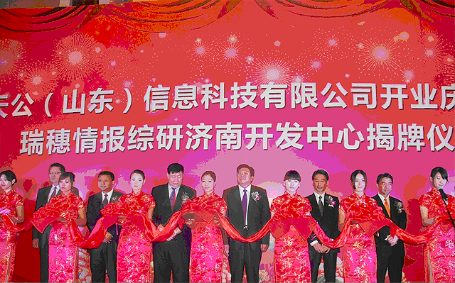
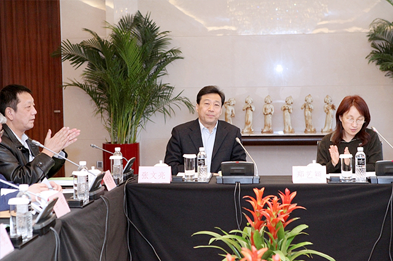
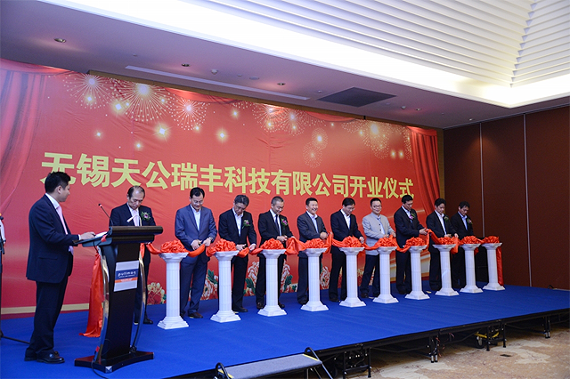

2012年5月25日，集团支部天公(山东)信息科技有限公司开业典礼暨瑞穗信息综研济南开发中心揭牌仪。当日，济南市委常委、副市长苏树伟、省商务厅孟建新、高新区管委会主任张新文以及市区相关部门领导出席了开业仪式，来自瑞穗信息综研、NTTDATA、富士通、日立集团、富士软件等日本嘉宾30余人参加了该盛典。
2013年3月21日，山东省科技厅委托济南市科技局在山东青岛专门组织和召开了针对天公瑞丰集团公司的微功率无线通信技术的专家鉴定会。其中，国家电网公司教授级高工张文亮，北京中电普华信息技术有限公司教授级高工沐连顺，以及中国电力科学院，南瑞集团公司，重庆电力科学院，广东电网公司及清华大学，华北电力大学等电力，通信行业的十余位名专家都出席了此次鉴定会。在会上，TG-Inwicos得到了“国际领先，国内首创”的鉴定结果，顺利通过了鉴定。
2013年9月6日，在当地政府的大力支持下，天公集团在无锡成立华东地区事业中心。
